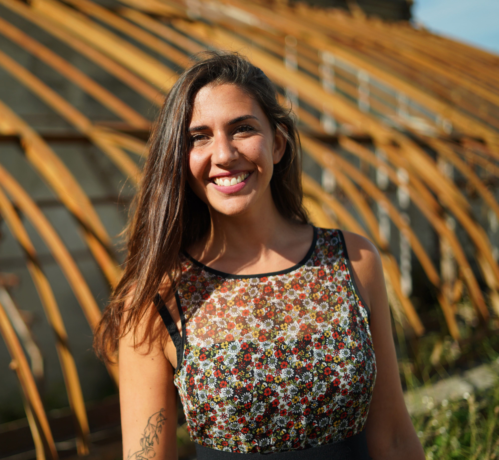

Victoire Vidal · Private Paris Guide
Live like locals do.
Born and raised in Paris, I create private cultural walks and bespoke experiences for international travellers. From art and history to neighbourhood life, each experience is shaped around your interests and pace, and led personally by me in English or French.

I've spent 33 years learning this city — its rhythms, its best-kept secrets, its people. My approach is intuitive and entirely bespoke. I share Paris as it is lived: through atmosphere, encounters, aesthetics, conversation and carefully curated moments.
Each day unfolds around your interests, pace and energy, with thoughtful planning and room for spontaneous discoveries.
With a background in professional cooking and project management, I bring a sense of hospitality, careful organisation and a warm, attentive presence. Every experience is personally designed and led by me, in English or French — whether you’re travelling solo, as a couple or with family.
Every experience begins with you — your interests, your pace and what brings you to Paris. These examples offer a glimpse of what we can explore together. We can shape a walk around one of these themes, combine several, or create something entirely different.
How Paris Invented the Art of Living
A hidden, elegant Paris — royal gardens, arcades and gilded rooms most visitors pass by. A walk about how power quietly became pleasure, and how a city learned to be lived rather than merely seen.
Discover this walk →The Beauty Hidden in Everyday Life
A slow morning that isn't about monuments at all, but about learning to notice — the small things that separate someone passing through from someone who belongs. Stop seeing the postcard; start seeing the real city.
Discover this walk →The Day the City Lost Its Freedom
The streets where ordinary Parisians lived through the Occupation. Not a war tour — a deeply human story of fear, courage, silence and the return of life, told exactly where it happened.
Discover this walk →Hidden Courtyards & the Artists' Quarter
Just below Montmartre, the quarter Parisians nicknamed "New Athens" — hidden courtyards behind carriage gates, the streets where a generation of artists lived, and the Paris most visitors never see.
Discover this walk →Discover Paris through its art, history and everyday life, with a private walk designed around your interests. From galleries and design to local markets, hidden courtyards and neighbourhood life, each itinerary reflects what draws you to the city. Personally led by me in English or French, the experience unfolds at your pace, with room for conversation and unexpected discoveries.
A warm, attentive presence throughout your time in Paris. From restaurant recommendations and reservations to transport coordination and museum bookings, I bring the practical details together and accompany you along the way. Each day is arranged around your plans, with flexible pacing and time to enjoy the city.
As a former professional chef, I offer private in-home dining experiences. Join me at a local market to select seasonal ingredients, then prepare a bespoke lunch or dinner together — or simply enjoy a thoughtfully prepared meal in an intimate setting.
With roots in the South of France and a background in project management, I design and oversee elegant, seamless regional experiences. From sourcing accommodations to coordinating drivers, restaurants and cultural visits — logistical fluidity and aesthetic coherence, throughout. Every journey is built from scratch around your group, your pace and your interests.
Share your dates, who you’re travelling with and what you’d love to explore. A few details are enough to start shaping your Paris experience.
A complimentary discovery call gives us time to discuss your interests, preferences and any practical needs. If you prefer, we can arrange everything by email.
You receive a personalised proposal and quote. Once agreed and booked, I take care of the planning and personally welcome you for your experience.
I can recommend Victoire without any reservations. She is a lovely person, and is very dependable in every way — from always being on time to finding the best things to do and how to do them, to helping me get around the city. She was invaluable to my enjoyment of Paris.
Describe what you're looking for — your dates, your group, what makes you curious about Paris. I'll get back to you within 24 hours with ideas and a tailored proposal.
Prefer to talk? Book a free 15-minute call and we'll figure it out together.
Book a free 15-min call →Tell me about your dates, your group, and what makes you curious about Paris — I'll get back to you within 24 hours with ideas and a tailored proposal.
Send me an email →Do you speak English?
Yes, fluently. All my experiences can be conducted entirely in English — and I'm used to working with international guests.
Can you accommodate guests with mobility needs?
Absolutely. My first guiding experience was with a guest living with Parkinson's. I adapt completely to every pace, every need — no question is too specific.
How far in advance should I book?
Ideally 1–2 weeks ahead. This gives me the time to design something truly tailored to you — rather than something generic.
Do you work with travel agencies and concierges?
Yes. If you're a concierge or travel agent looking for a trusted Paris partner for your clients, get in touch directly — I'd love to discuss how we can work together.